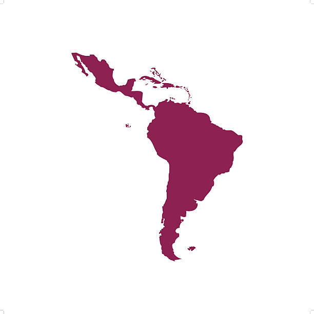

Comparativa entre Colombia, Venezuela, Brasil, Argentina, Chile, Perú, México y Ecuador
América Latina enfrenta enormes desafíos en su matriz energética. Mientras algunos países avanzan en el uso de fuentes limpias, otros siguen dependiendo del petróleo y el gas. Esta plataforma compara el consumo y producción de energías limpias en ocho países clave, para entender su progreso y desafíos en la transición energética.
Elegimos ocho países de América Latina con realidades energéticas distintas para comparar su producción y consumo de energías limpias.
Analizamos cómo ha cambiado la producción y consumo de energías limpias entre países de América Latina.
Queremos evidenciar las desigualdades y avances en la transición energética de la región.
Nos concentramos en ocho países clave con contextos energéticos diversos y representativos.
Conoce qué tipo de energía se produce y consume en cada país, y cómo avanza la región hacia un futuro más limpio.